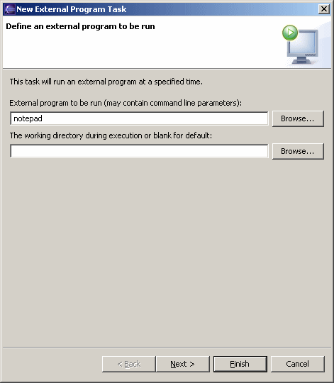

Schedule External Program To schedule an external program to be run at a specified time, open the scheduler view, right click to access the popup menu, select the "New" submenu, and then select "External Program". This opens the scheduler wizard so that the name/path of an external program can be specified. Click the "Browse" button to open a file dialog to easily select an existing program or file. The working directory to be use during execution may also be specified. Click the "Next >" button to schedule when the message is to be displayed. |